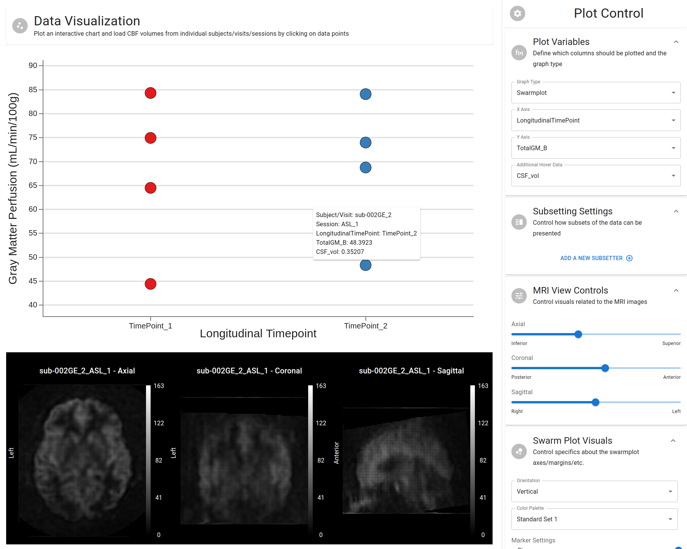
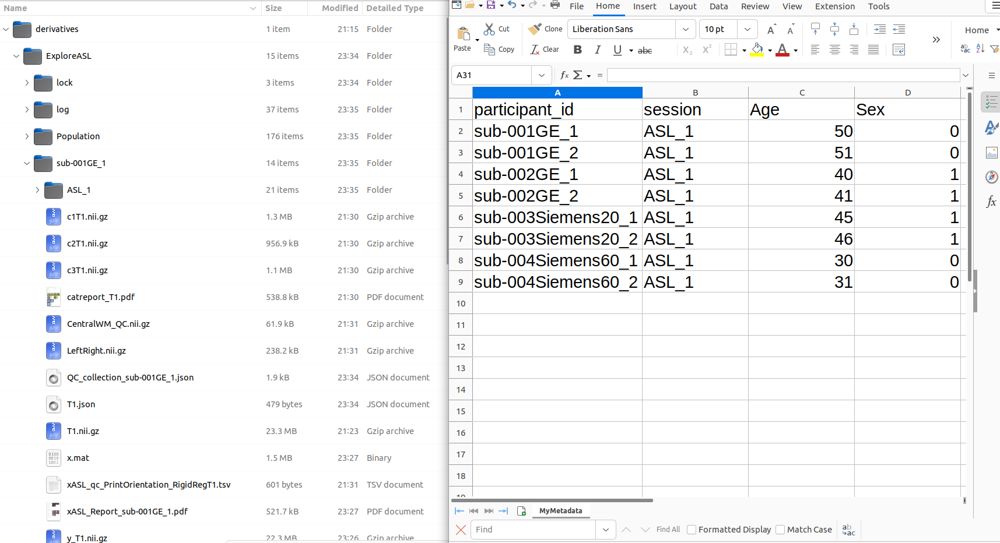

Module Overview
Purpose
Although ExploreASL exports excellent reports as to the processing of a particular subject/visit/session/scan, it can often be tedious to manually inspect each of these reports to determine the overall quality of the data. This module serves to address these limitations by providing an interactive plot of the data, from which individual perfusion (and interactive) volumes can be loaded in and inspected for significant assistance with quality control.
The following is an example of the module's output:

While not immediately evident due to the picture being static, the above plot is, in-fact, interactive. The mouse was hovering over a datapoint, rendering a tooltip with information pertaining to that datapoint, including the subject/visit/session information. Furthermore, when the datapoint was clicked, the corresponding perfusion volume was loaded in and displayed below the plot. Each perfusion volume was also interactive. If the mouse hovered over a particular voxel, the a tooltip with the voxel's value and coordinates would render.
In the manner, the module allows for: - Immediate visual inspection of the data, including the ability to identify outliers - The ability to quickly load in individual perfusion volumes for further inspection and know exactly what other data is associated with that volume
Pre-requisites
Study Status
It is assumed that you have a fully-analyzed study by the time you need to perform quality control assessment.
Metadata/Ancillary Information Incorporation
Furthermore, if you wish to incorporate your own ancillary data (i.e. clinical, demographics, etc.) into the assessment, you will need to have this data merge-able with the output of ExploreASL.
The example below demonstrates what is required for the example dataset:

- Your metadata file must be saved as a
.csvor.tsvfile. Excel is NOT supported at the current time. This is simple enough to ameliorate by going toFile > Save Asin Excel and selecting the appropriate format. - The metadata must have at least one column called
participant_idwhich contains the subject/visit identifiers in the same format as found in thederivatives/ExploreASLfolder. Do not use subject folders fromrawdataorsourcedata, as ExploreASL alters these names during its ownBIDS2Legacysubmodule. - (OPTIONAL; REQUIRED ONLY IF MULTIPLE SESSIONS EXIST PER VISIT) The metadata may also contain a column called
session. These values must be the same as the session folders found inderivatives/ExploreASL/{SUBJECT_VISIT}. Typically these areASL_1,ASL_2, etc. If you do not have multiple sessions per visit, you can ignore this column. In the example above, this is indeed the case: we have multiple visits (as seen by the_1and_2suffixes found underparticipant_id), but only one session per visit.
If the above is satisfied (or if you don't have any metadata to incorporate), you can proceed to the next section.